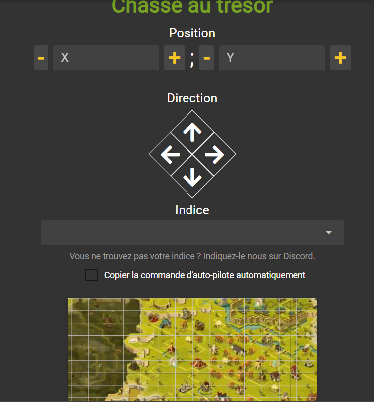

Présentation dofus au trésor.
Dans dofus il y a ce qu'on appelle des chasses au trésors, elle commence du niveaux 20 et vont jusqu'au level 200. ce qui change entre les chasses et leurs niveaux c'est le coffre gagner à la fin de la chasse le taux de drop sera plus élevée. Les choses a gagner dans une chasses sont : des roses des sables, des kamas a l'ouverture du coffre, on peux aussi avoir des fragment de carte de chasse légendraire. Quand vous allez ouvrir un coffre vous avez la possibilité que les roses que vous gagnez soit multiplilé part x10 ou meme x100 ce qui augmente les roses récupéré. Cliquez sur l'image pour aller sur le sites en question.